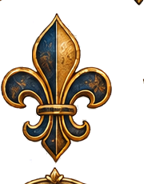

Moderna I
Práticas sociais, aparência, sociabilidade e experiências do corpo na Época Moderna.
← Voltar para o Menu Principal

Corpos e Costumes
Entre a Festa e o Controle: Disputas e Resistências na Cultura Popular
Entre o Desejo e a Moral: Os Segredos da Prostituição na Idade Moderna
Vestir, Exibir e Pertencer: A Moda na Idade Moderna
Onde Estavam as Mulheres Modernas?